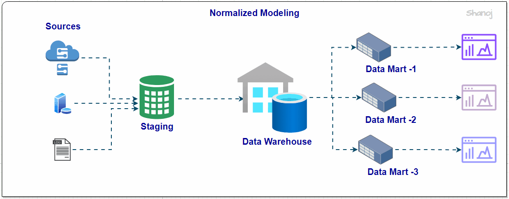
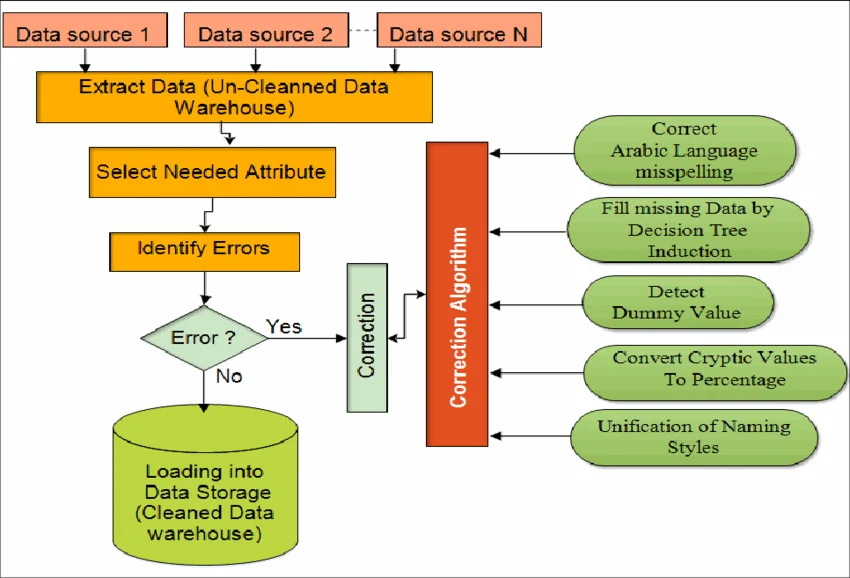
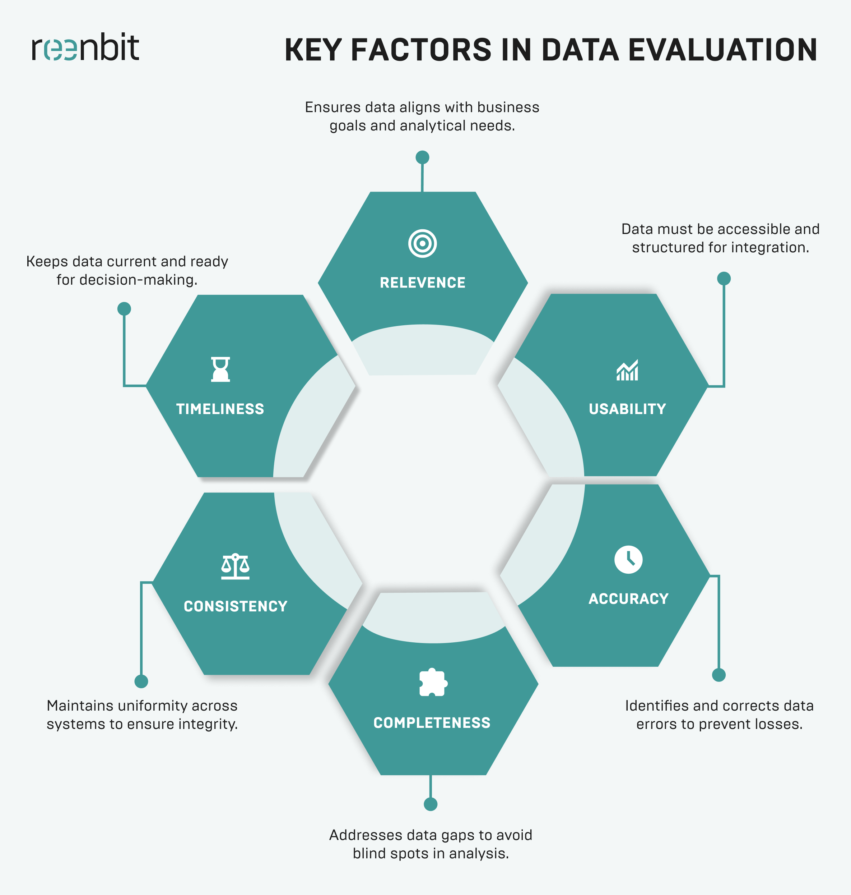
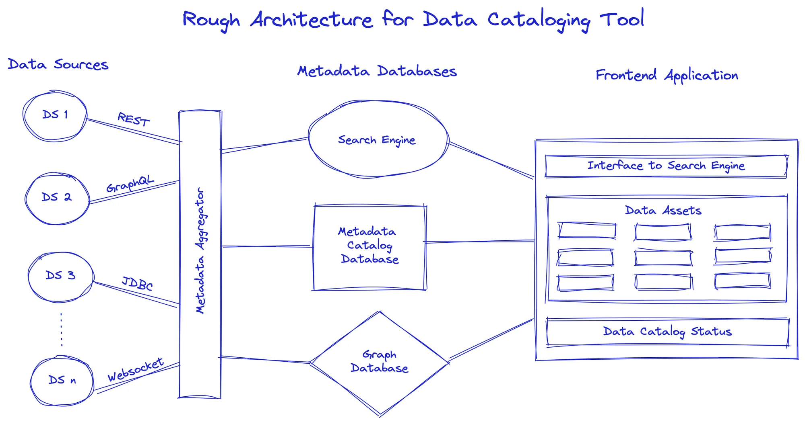
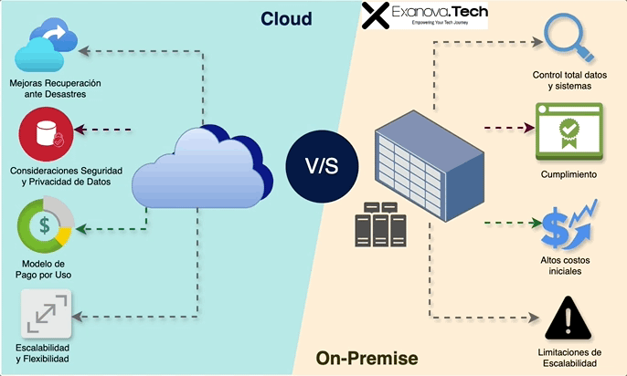
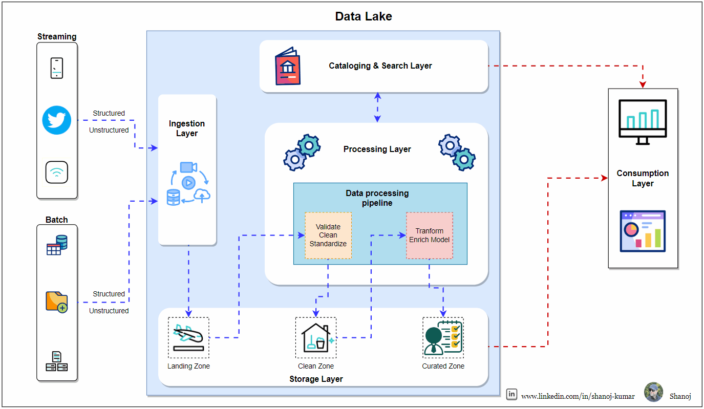
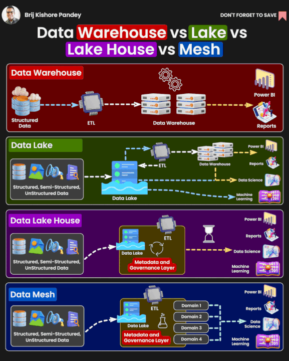

Data Architecture: Modeling and Storage
Module 2: From Data Sources to Data Destination
This module explores how data is discovered, evaluated, structured, and ultimately stored. It focuses on understanding the origin of data and designing architectures that enable efficient analysis and decision-making.

The Real Data Problem
In real-world scenarios, data does not arrive in a clean, structured format. Instead, it is fragmented across multiple systems, formats, and levels of quality.
- Data distributed across multiple sources
- Different formats (Excel, APIs, databases, logs)
- Disconnected systems
- Lack of control and governance
Before building any architecture, the first challenge is to organize and understand this complexity.
Source Modeling
Understanding data sources is a critical first step in any data project. This involves identifying, classifying, and analyzing how data is generated and delivered.
Data Sources
- Internal systems: ERP, CRM, databases
- External systems: APIs, third-party providers
- Unconventional sources: logs, IoT sensors, spreadsheets
Key Dimensions
- Structure: Structured, semi-structured, unstructured
- Frequency: Batch vs real-time
- Format: CSV, JSON, SQL, streaming data
Common Challenges
- Incomplete or inconsistent data
- Schema changes over time
- Duplicate records
- Unstable external APIs

Data engineers must analyze these aspects to ensure proper integration and reliability.
Data Source Evaluation
Not all data sources are equally reliable or useful. Evaluating data quality and characteristics is essential before integrating them into a system.
- Data Quality: completeness, consistency, validity, uniqueness
- Volume: determines scalability and technology choices
- Velocity: batch vs real-time requirements
- Cost: storage, queries, and data transfer
- Reliability: uptime and dependency on external systems
- Schema Stability: frequency of structural changes

Poor-quality data leads to unreliable insights, reinforcing the principle: "Garbage In, Garbage Out".
Data Cataloging
Data cataloging provides visibility and control over data assets, enabling organizations to understand, manage, and govern their data effectively.
Core Components
- Data Dictionary: defines fields, types, and descriptions
- Source Catalog: inventory of available data sources
- Metadata: information about origin, ownership, and updates
Data Classification
- Sensitive data (PII)
- Critical business data
- Historical data
- Public data
A data catalog ensures discoverability, reduces duplication, and supports governance and compliance.
Example source data and metadata:

Demystifying On-Premise vs. Cloud Computing
In the digital era, IT infrastructure is at a crossroads: choosing the tradition of OnPremise or embracing the agility of CloudComputing. Both options have their merits, but understanding their differences is key to making strategic decisions.
OnPremise: Systems and Data Control
On-Premise refers to local infrastructure that companies manage internally. It is the preferred option for organizations that require:
- Control over their data and systems.
- Deep customization and specific regulatory compliance.
- However, it involves challenges such as high upfront costs, complex maintenance, and scalability limits.
CloudComputing: The Freedom to Innovate
Cloud Computing, on the other hand, allows companies to rent access to infrastructure and services hosted on the internet, offering:
- Flexibility and scalability.
- Cost efficiency with pay-as-you-go models.
- Improved resilience and disaster recovery.
- Dependency on third parties raises questions about security and data control.
How to Choose?
The choice between OnPremise and CloudComputing is not binary. Many companies benefit from a hybrid approach, leveraging the best of both worlds. Consider the following when making your decision:
- Long-term cost analysis.
- Security and compliance requirements.
- Scalability and flexibility needs.

OLTP vs OLAP Systems
Modern architectures separate operational systems from analytical systems to avoid performance conflicts.
OLTP (Transactional Systems)
- Handles daily operations
- Fast inserts and updates
- High concurrency
OLAP (Analytical Systems)
- Supports complex queries
- Processes large volumes of historical data
- Used for reporting and business intelligence
SELECT country, SUM(sales)
FROM orders
GROUP BY country;Separating OLTP and OLAP ensures scalability and prevents performance degradation in production systems.
Data Warehouse
A Data Warehouse is a structured storage system optimized for analytical queries and business intelligence.
- Data is cleaned, transformed, and loaded into a consistent schema before use.
- Uses schema-on-write to enforce structure and quality at ingestion time.
- Optimized for fast analytical queries and complex aggregations.
Example Use Cases
- Sales analytics: monthly revenue, product performance, and customer segments.
- Financial reporting: consolidated ledgers, budget comparisons, and trend analysis.
- Operational metrics: inventory levels, supply chain KPIs, and service performance.
Typical warehouse architectures separate staging, integration, and presentation layers to ensure reliable and repeatable analytics.
Common use cases include dashboards, reporting, KPI tracking, and historical analysis for strategic decision-making.
Data Lake
A Data Lake stores raw data in its original format without requiring prior structuring, making it ideal for flexible exploration and advanced analytics.
- Supports all formats: structured, semi-structured, and unstructured data.
- Uses schema-on-read, allowing structure to be applied when the data is consumed.
- Highly scalable and cost-effective for large volumes of data.
Example Use Cases
- Streaming sensor data and log ingestion for real-time monitoring.
- Machine learning experiments with large raw datasets.
- Data archival and historical storage before transformation.
Without governance and metadata management, a data lake can become an unmanageable data swamp, making discovery and quality control difficult.

Lakehouse Architecture
The Lakehouse combines the flexibility of data lakes with the performance and structure of data warehouses.
- Supports both raw and processed data
- Enables efficient querying
- Reduces data duplication
This hybrid model represents the modern approach to data architecture.
Data Warehouse vs Data Lake
While both systems store data, they serve different purposes and users within an organization.
| Feature | Data Warehouse | Data Lake |
|---|---|---|
| Data format | Structured, cleaned, and transformed | Raw, unstructured, and semi-structured |
| Schema strategy | Schema-on-write | Schema-on-read |
| Primary users | Business analysts, executives | Data scientists, engineers |
| Best for | Reporting, BI, historical analysis | Exploration, ML, raw data storage |
| Governance needs | High, with strict data quality | Essential to avoid a data swamp |

This comparison helps clarify when to use a warehouse, a lake, or a hybrid approach such as a lakehouse.